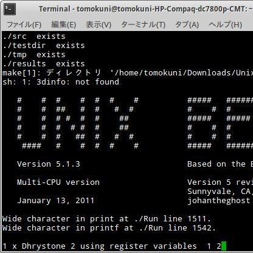

Tomokuni Kani - Repository


Profile
中学2年次において、創造アイデアロボットコンテスト全国中学生大会に出場し、全国ベスト8に入賞した。その後、機械工学に関して専門的に学ぶために岐阜工業高等専門学校機械工学科に進学し、高専ロボコンに参加して機械加工を担当した。高専5年次の卒業研究で有限要素法による流路の形状最適化手法の改善に関して研究を行ったことが切っ掛けで、コンピュータシステム自体に興味を持ち機械工学と情報工学の融合分野を取り扱う岐阜大学人間情報システム工学科に進学した。岐阜大学では原山研究室に所属し、FreeBSDを用いて構築された実機ネットワークを用いて、IPv4とIPv6を併用したマルチパスルーティングにおける輻輳制御アルゴリズムの通信効率向上に関わる改善を行った。岐阜大学の卒業研究における論文の追加調査において、有限要素法とルーティングを融合させた手法であるポテンシャルルーティングを発見した。そして、その手法をマルチパスルーティングに拡張することで、計算量オーダーを大きく増やさずに、卒業研究の手法より遥かに多数の本数のパスを、リンク負荷に適応して設定可能なマルチパスルーティングが実現できる事に気付いた。そのため、卒業後にコンピュータ・ネットワークに強みを持つJAISTに進学し、篠田研究室に所属し、日本国内のインターネットインフラ研究・運用を牽引するWIDE PROJECTにも参加して現在に至っている。
Facebook上では本名で記事投稿中。SoundCloud上ではSpino名義で実験的な音楽を発表中。
直接のご連絡は、
tomokuni.kani.official
@gmail.com
まで！
Facebook上では本名で記事投稿中。SoundCloud上ではSpino名義で実験的な音楽を発表中。
直接のご連絡は、
tomokuni.kani.official
@gmail.com
まで！
Generative Test
SNS Icons

Copyright (C) TOMOKUNI KANI. All right reserved.
×
Genarative Communicator
アプリケーション間でネットワーク越しに描画命令を送信することにより、ジェネレーティブアートの描画を同期させるテストプログラム openFrameworks上で作成
CLOSE
×
研究において作成したルーティングアルゴリズムのシミュレーションプログラム
ポテンシャルルーティングをマルチパス拡張したアルゴリズムをns-3上に実装して試験した。多数の経路を利用可能なことを確認した。
CLOSE↓
Tomokuni Kani - Repository